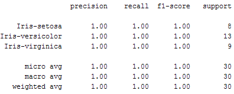

Implementasi Algoritma KNN dengan Scikit-Learn
Pada bagian ini, kita akan melihat bagaimana pustaka Scikit-Learn Python dapat digunakan untuk mengimplementasikan algoritma KNN dalam waktu kurang dari 20 baris kode.
Dataset
Kita akan menggunakan set data iris yang terkenal untuk contoh KNN kita. Dataset terdiri dari empat atribut: lebar sepal, panjang sepal, lebar daun dan panjang daun. Ini adalah atribut dari jenis spesifik tanaman iris. Tugasnya adalah untuk memprediksi kelas tempat tanaman ini berada. Ada tiga kelas dalam dataset: Iris-setosa, Iris-versicolor dan Iris-virginica.
Import library dan dataset.
in[1]:
import numpy as np
import matplotlib.pyplot as plt
import pandas as pd
Tetapkan nama colum ke dataset.
names = ['sepal-length', 'sepal-width', 'petal-length', 'petal-width', 'Class']
baca dataset melalui pandas dataframe
dataset = pd.read_csv("iris.csv")
dataset.head()

Preprocessing
Langkah selanjutnya adalah membagi dataset kami menjadi atribut dan labelnya
X = dataset.iloc[:, :-1].values
y = dataset.iloc[:, 4].values
Variabel X berisi empat kolom pertama dari dataset (yaitu atribut) sementara y berisi label.
Train Test Split
Untuk menghindari pemasangan berlebihan, dataset dibagi menjadi data train dan pemisahan uji,
from sklearn.model_selection import train_test_split
X_train, X_test, y_train, y_test = train_test_split(X, y, test_size=0.20
Script di atas membagi dataset menjadi 80% data kereta dan 20% data uji. Ini berarti bahwa dari total 150 catatan, set train akan berisi 120catatan dan set tes berisi 30 catatan tersebut.
Feature scalling
Sebelum membuat prediksi aktual, itu selalu merupakan praktik yang baik untuk skala fitur sehingga semuanya dapat dievaluasi secara seragam. Algoritma gradient descent (yang digunakan dalam pelatihan jaringan saraf dan algoritma pembelajaran mesin lainnya) juga lebih cepat berkonvergensi dengan fitur yang dinormalisasi.
from sklearn.preprocessing import StandardScaler
scaler = StandardScaler()
scaler.fit(X_train)
X_train = scaler.transform(X_train)
X_test = scaler.transform(X_test)
Training and Predictions
Sangat mudah untuk melatih algoritma KNN dan membuat prediksi dengannya, terutama saat menggunakan Scikit-Learn.
from sklearn.neighbors import KNeighborsClassifier
classifier = KNeighborsClassifier(n_neighbors=5)
classifier.fit(X_train, y_train)
Langkah pertama adalah mengimpor class KNeighborsClassifier dari library sklearn.neighbors. Di baris kedua, kelas ini diinisialisasi dengan satu parameter, yaitu n_neigbours. Ini pada dasarnya adalah nilai untuk K. Tidak ada nilai ideal untuk K dan dipilih setelah pengujian dan evaluasi, namun untuk memulai, 5 tampaknya menjadi nilai yang paling umum digunakan untuk algoritma KNN.
Langkah terakhir adalah membuat prediksi pada data pengujian. Untuk melakukannya, jalankan skrip berikut:
y_pred = classifier.predict(X_test)
Mengevaluasi Algoritma
Untuk mengevaluasi suatu algoritma, matriks confusion, ketepatan, daya ingat dan skor f1 adalah metrik yang paling umum digunakan. Metode confusion_matrix dan klasifikasi_laporan sklearn.metrics dapat digunakan untuk menghitung matrik ini. skrip berikut:
from sklearn.metrics import classification_report, confusion_matrix
print(confusion_matrix(y_test, y_pred))
print(classification_report(y_test, y_pred))
Output dari skrip di atas terlihat seperti ini:

Hasilnya menunjukkan bahwa algoritma KNN kami dapat mengklasifikasikan semua 30 catatan dalam set uji dengan akurasi 100%, . Meskipun algoritma berkinerja sangat baik dengan dataset ini, jangan berharap hasil yang sama dengan semua aplikasi. Seperti disebutkan sebelumnya, KNN tidak selalu berkinerja baik dengan dimensi tinggi atau fitur kategorikal.
Membandingkan Tingkat Kesalahan dengan Nilai K
Di bagian pelatihan dan prediksi, bahwa tidak ada cara untuk mengetahui sebelumnya nilai K yang menghasilkan hasil terbaik di run pertama. Kami secara acak memilih 5 sebagai nilai K dan kebetulan menghasilkan akurasi 70%.
Salah satu cara untuk membantu Anda menemukan nilai K terbaik adalah dengan memplot grafik nilai K dan tingkat kesalahan yang sesuai untuk dataset.
Di bagian ini, kami akan memplot kesalahan rata-rata untuk nilai prediksi set tes untuk semua nilai K antara 1 dan 40.
Untuk melakukannya, pertama-tama mari kita menghitung rata-rata kesalahan untuk semua nilai prediksi di mana K berkisar dari 1 dan 40. Jalankan skrip berikut:
error = []
# Calculating error for K values between 1 and 40
for i in range(1, 40):
knn = KNeighborsClassifier(n_neighbors=i)
knn.fit(X_train, y_train)
pred_i = knn.predict(X_test)
error.append(np.mean(pred_i != y_test))
Skrip di atas mengeksekusi loop dari 1 hingga 40. Dalam setiap iterasi kesalahan rata-rata untuk nilai prediksi set tes dihitung dan hasilnya ditambahkan ke daftar kesalahan.
Langkah selanjutnya adalah memplot nilai kesalahan terhadap nilai K. Jalankan skrip berikut untuk membuat plot:
plt.figure(figsize=(12, 6))
plt.plot(range(1, 40), error, color='red', linestyle='dashed', marker='o',
markerfacecolor='blue', markersize=10)
plt.title('Error Rate K Value')
plt.xlabel('K Value')
plt.ylabel('Mean Error')
Grafik output terlihat seperti ini:
Dari output kita dapat melihat bahwa kesalahan rata-rata adalah nol ketika nilai K adalah 5 sampai 8 dan 11 sampai 37. saran dari saya untuk bermain-main dengan nilai K untuk melihat bagaimana hal itu berdampak pada keakuratan prediksi.